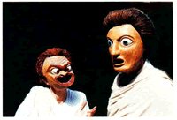
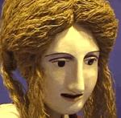

Unit
2 - Theatre History
Module
2: Jesters, Tricksters and Fools
Lesson
2 - Commedia del Arte
Introduction:
The
purpose of this lesson is to become familiar with (and experiment
with) the commedia style.
Objectives:
- share
responses with other students
- listen
to the ideas of others
- work
cooperatively in groups of all sizes to plan and participate in
drama experiences
- practice
leadership of small and large groups
- accept the
leadership of others in small and large groups
Resource:
(pdf) Background notes
for theatre history unit
CELs:
C, CCT
Components:
Creative/Productive, Cultural/Historical
 |
Ask
your students the following questions as an anticipatory set:
Who are some of your favorite comedians? What is it that makes
them funny - physical stuff, social commentary, risqué
material? In laughing at them, are we also laughing at ourselves
and others we know? |
Activities:
Activity
1- Warm Up:
"Everybody's
It"
This
is a good energy boosting game of tag. Everybody is it all
at the same time. You yell 'go' and then the students try
to tag others while not being tagged themselves. Tagging can
only happen on the back. It works best in a fairly large,
yet contained area.
* Variation: when tagging call out the name of an animal,
the person tagged must stand and make the animal noise until
"freed" by a hug.
(5
min.)
"Yes, Let's"
This
game encourages students to listen and accept suggestions.
Students
begin by walking about the room in a random pattern. At any
point, anyone can call out an instruction -"Let's all
crow like roosters", and everyone must respond "Yes,
Let's!" and then must continue crowing until a new instruction
is called. Let the game continue with lots of suggestions.
Often it will end after much movement and silliness when someone
gets the bright idea to say, "Let's all lay down and
go to sleep!". (5 -8 min.)
Activity
2 - Mask Monologue:
Read
the background information on the masks and the notes page on
Commedia dell 'Arte. Form groups of 3 to 5 people and have the
students work together to prepare a summary of the notes and
write a description of one of the masks as seen on the related
sites (below).
Using
the mask as an inspiration for the character, the groups improvise
scenes suitable for the characters. Each scene must set up
an opportunity for a monologue (perhaps in the form of an
aside to the audience). After students have completed the
improv, they should summarize the scene in writing and turn
it in with the mask description and summary of notes. (30-40
min.).
|

This
image shows two examples of the reconstructed masks, a Slave
and a Young Man. These are typical characters from Menander's
plays.
|
"The
reconstructions are based on the appearance of the original
masks as shown by artifacts, mainly small models or masks
used as motifs in the decoration of pottery or sculpture.
There are no known surviving examples of the original masks
used in (Commedia del Arte) performances. The aims
of the project are to show what the original masks might
have looked like and to produce a set of masks that can
be used in performances of plays by Menander, the only New
Comedy playwright whose works survive. "
(Chris
Vervain copyright 2001)
|
|
This
image shows a mask designed to be suitable for a female
character from Menander, possibly a hetaera.
View
the web site: Chris Vervain - "Mask
Theatre"
(Chris
Verain, copyright 2001)
|

|
Activity
3 - Commedia Scene:
Have students create their own Commedia type scenes using the
characters in modern settings. Use masks (if available), or a
simple costume piece to denote characters. Use the same small
groups of three to five from the previous assignment. Select from
the table below to choose characters and improvisational scenarios
(20 min.):
| Characters |
Scenarios |
Masters:
Pantalone
(old, crude, greedy, paranoid and of limited intelligence)
Gratiano (usually a miserly lawyer, called vecchi)
Capitano
(a blustering Spanish captain who is afraid of his own shadow)
Servants:
Pedrolino and Arlecchino (Harlequin) are clever, quick
and always looking to trick the master (they are called zanni)
1st Zany (a male servant who was a clever rogue often
plotting against the masters)
2nd Zany (a stupid male servant caught up in the 1st
Zany's plans and ends up a victim of his pranks)
3rd Zany (a female servant who would participate in
schemes and provide a romantic story among the servants)
Lovers:
(in love, called amarosi) |
i)
A local restaurant, customers and employees, trying to place
an order - no one has any brains at all.
ii)
At the scene of an minor auto accident, arguing over who
is to blame, the police arrive.
iii)
A scene about love and mistaken identity.
iv)
A scene about greed and trickery.
v)
At a work site on a highway project, in which no work ever
seems to get accomplished.
vi)
At a political rally, trying to win votes and gather donations
for the party.
vii)
Try a scene with a lazzo - a piece of stage business
with juggling, singing or acrobatics - which was once a
regular part of an actor's repertoire. (See Lesson
4 in this module for juggling instruction.)
|
Instructional
Strategies:
Role play, assigned questions, games
Evaluation:
You are evaluated based on your group's interpretation of
the comedy style. Read the
evaluation sheet before beginning the assignments.
Alternative
On-line Activity:
Have
students complete only Activities 2 and 3. Have the students complete
the same activate in home schools with only a partner, then e-mail
the responses to you or send video clips. You may also chose to
have a teacher in the remote location evaluate the student work.
Next
Lesson / Student Lesson
/ Previous Lesson